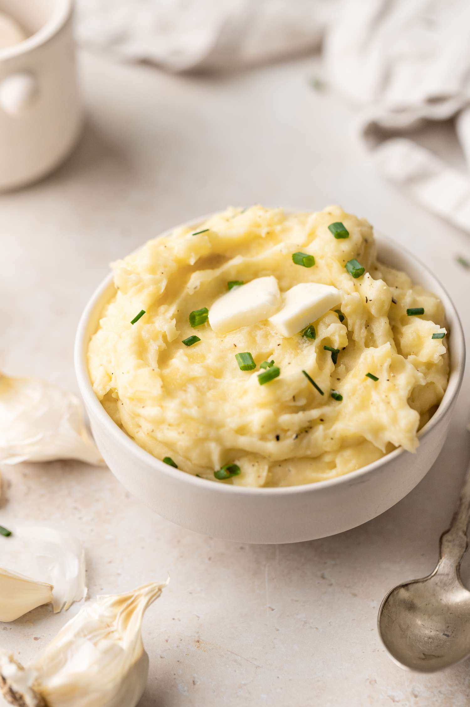

Mashed Potatoes

Description
Easy, Creamy Mashed Potatoes Made at Home!
Ingredients
- 5 Pounds Potatoes
- 2 Cloves Garlic, Minced
- 6 Tablespoons Butter
- 1 Cup Whole Milk
- 4 Ounces Cream Cheese
- Toppings: Chives/Green Onion, Fresh Black Pepper, Sea Salt
Steps
- Cut and boil potatoes.
- Mix butter, milk, and salt in small saucepan until melted.
- Dry and mash potatoes.
- Stir together butter mixture, potatoes, and cream cheese.
- Season and serve.